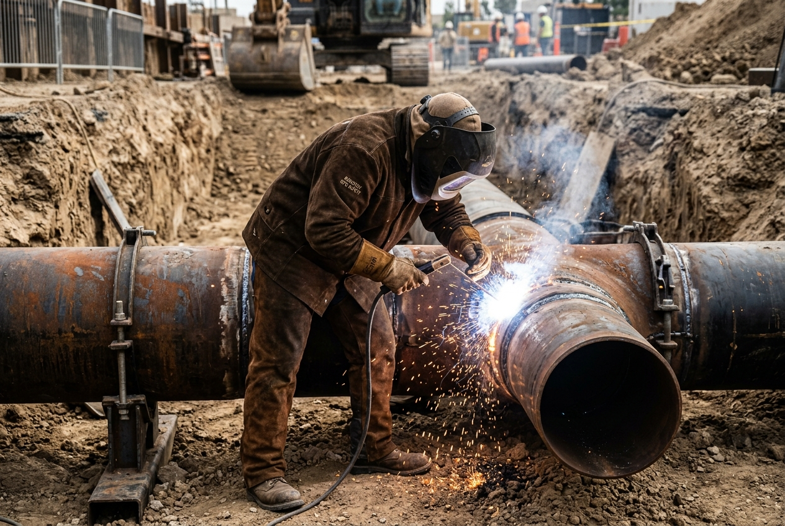

Montaje metalúrgico y soldaduras de precisión para transporte de fluidos y soporte estructural.
Las redes de cañerías de procesos (piping) y las estructuras de soporte soportan altas presiones operativas y condiciones climáticas severas. En Servicios Industriales San Cayetano fabricamos y montamos prefabricados metálicos, colectores de yacimiento (manifolds) y realizamos soldaduras en cañerías con personal técnico especializado, complementando la obra con fundaciones civiles de hormigón y cámaras de contención cuando el proyecto lo requiera.

Soldaduras de tuberías de acero al carbono e inoxidable mediante procesos TIG (GTAW) y electrodo revestido (SMAW).
Armado en taller y montaje en yacimiento de colectores, derivaciones y manifolds bajo estrictos controles dimensionales.
Fabricación y montaje de pasarelas, soportes de cañerías, pórticos de izaje y estructuras de naves industriales.
Hormigonado de bases de cañerías, poyos de apoyo, cámaras separadoras y contenciones perimetrales de seguridad en yacimiento.
Revisión detallada de la ingeniería de detalle y planos isométricos para despiece técnico del material.
Corte frío de tubos de acero y mecanizado de biseles según el ángulo de soldadura especificado por el procedimiento (WPS).
Alineación física de las tuberías y soldadura en múltiples pasadas (raíz, relleno y terminación) realizada por soldadores homologados.
Inspección de las soldaduras (tintas penetrantes o radiografía), limpieza abrasiva del tramo y aplicación de esquema de pintura protectora.